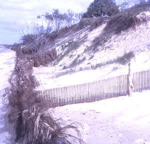
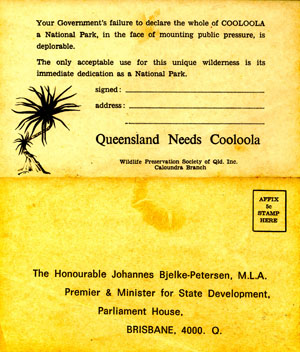
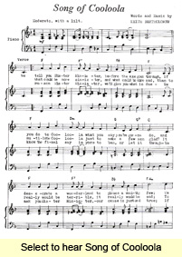

- Cooloola
- National feature worth saving
- Bloodless revolution
- Still in the news
- Song of Cooloola
From the 1960s into the 1970s the battle to preserve Cooloola as a national park was waged by WPSQ and other community members and groups. This magnificent sand mass of wallum wildflowers, lakes and coloured sands in the Upper Noosa River region was under threat from sandmining and grazing.
Kathleen McArthur was very active in this campaign, initiating in 1969 Australia’s first ‘postcard campaign’. It took off like a ‘hot balloon’, resulting in many thousands of ‘Save Cooloola’ postcards being sent to the Queensland Premier from people nationwide. The Australian newspaper at the time described the Caloundra Branch of WPSQ as ‘the most militant conservation cell in Australia’ (noted by Kathleen in her Lunch Hour Theatre script One life in August 1995).
Contributing to the campaign was young singer-songwriter Keith Bartholomew, who in 1970 composed and recorded Song of Cooloola, a protest song aimed at the powers-that-be.
Cooloola was gazetted as part of the Great Sandy National Park in 1973.© WPSQ, Sunshine Coast & Hinterland Inc
Caloundra Weekly Advertiser 19 July 1963
Wildlife and Landscape
A NATIONAL FEATURE WORTH SAVING
As has been said before in this series, the Wildlife Preservation Society of Queensland does not advocate complete and all-embracing protection of wildlife. That would not be practical. What is does advocate is planned use of our national resources, so that commercial development may continue without unnecessary destruction of the flora, fauna and landscape.
The national heritage we enjoy is for our use and the use of future generations, so that we are obliged, when developing our resources, to guarantee that provision is made for tomorrow’s people. Where it is obvious that current action is unnecessarily abusive, then we protest.
At present, the Society is protesting against the granting of the applications of a mining company for leases to mine the sand dunes between the Noosa River Bar and Double Island Point.
Queensland has thousands of miles of beaches, many of which could be mined without large-scale interference with the balance of nature. Promises are made to rehabilitate the mined areas. This is never completely successful, although it is the opinion of some people that improvement is effected, and in some instances authorities have been satisfied.
The heavy minerals add weight to the sand and also are a binding element. When they are removed the sand drifts before the wind much more readily. Complaints about drifting sand in these ‘rehabilitated’ areas are constantly appearing in the Press. Even without mining, when the vegetation on sand is disturbed drifts occur. This is exemplified in the comparatively small area to the south of Point Cartwright. Although the most suitable trees were planted there and a barrier erected, roads and concrete kerbing and even fences have been enveloped in the sand drift and serious obstruction has been caused in the Mooloolah River. These sand dunes were only about twenty feet in height. The dunes in the area between Teewah and Double Island Point range in height up to 750 feet and average probably about 300 feet. They extend for twenty miles. Behind these dunes, in the southern section, is the newly gazetted Fauna Reserve, which is dependent for fresh water on Lake Cooloola. Cooloola is a very beautiful, sand-bottomed, but small lake, famous for its waterfowl. An infinitesimal portion of the volume of sand in the dunes now protecting the area would fill up and destroy this source of fresh water.
The northern portion supports fauna and flora unique on the Australian mainland; found elsewhere only on Fraser Island, to which, it is believed, it once was joined. Also unique are the magnificent scenic cliffs of many coloured sands. Only one other place in Australia boasts such coloured sands and it is thousands of miles away on the coast of West Australia. Experts agree that once the vegetation on these dunes is removed it would not be possible to rehabilitate them.
Have we the moral right to allow interference on such an area, believing as we do that the devastation will be complete and far reaching? We have not.
Kathleen McArthur
Wildlife Preservation Society of Queensland, Caloundra Branch
Reproduced with permission of Sunshine Coast Newspapers
Kathleen McArthur Slide Collection
© WPSQ, Sunshine Coast & Hinterland Inc
Sunshine Coast Weekly Advertiser 17 September 1970
Wildlife and Landscape
COOLOOLA––A BLOODLESS REVOLUTION
After 150 years of settlement, first with political domination when a colony followed by economic domination from interstate and overseas, Queensland won the preservation of Cooloola by its own will and effort.
The ‘people’ won an historic victory against vested interests and power-hungry politicians. There is a never-to-be-forgotten lesson in this. We identified ourselves with Cooloola. It became a symbol of our desire to remain Australian even if we must sacrifice some of the hypothetical ‘standard of living’ which is really nothing more than accumulation of possessions, many of which can be happily done without, while at the same time gaining increased quality in our lives.
Defeat was unthinkable. We showed that we were not prepared to accept it without forfeiting peaceful measures. Reason prevailed and so it is best not to repeat the suggestions made for following a possible defeat.
The next step is intelligent practical management for the protection of that most unstable sand mass. As a National Park it will have official protection through the excellent Forestry Department’s National Parks system. But, from the word ‘go’, or more appropriately the word ‘no’, local residents of the area began talking of the ‘development’ of the National Park––there was talk of roads and tourist facilities. Under the Queensland system, National Parks do not have roads through them. Access to a park is usually provided, but not always as example the Mooloolah River National Park, but roads are not put through National Parks.
In the lifetime of the Wildlife Preservation Society of Queensland (8 years last week) we have had to battle two such proposals, one for an esplanade road around the Noosa National Park and the other a road through the famous Lamington National Park from Binna Burra to O’Reillys. Fortunately we won both, despite a considerable amount of authorative opposition. One of the excuses for roads that was used was that our National Parks should also be available to the old and the crippled, to which one octogenarian woman replied: ‘There is nowhere else for the old to walk in safety nowadays but in National Parks’.
Cooloola is under-sized as a wilderness area, yet, as it is all we have left, we must first and foremost preserve its wilderness quality. If we do this we will attract a new category of tourists––as the campaigning through the past year has shown. Cooloola is for those who identify with a landscape unadulterated by man. The ‘magic’ of Cooloola is a very precious heritage as such, to be loved and cherished and protected.
Kathleen McArthur
Wildlife Preservation Society of Queensland, Caloundra Branch
Reproduced with permission of Sunshine Coast Newspapers
© WPSQ, Sunshine Coast & Hinterland Inc
Sunshine Coast Weekly Advertiser 4 June 1970
Wildlife and Landscape
COOLOOLA IS STILL IN THE NEWS
‘The Song of Cooloola’, having been launched successfully by  the composer Keith Bartholomew of Nambour, is now spreading throughout the land. Every donor to the Caloundra Branch of the Wildlife Preservation Society’s appeal for funds to cover the expenses of the recent hearing in the Mining Warden’s Court at Gympie––and they number about 500––is receiving a complimentary copy. So also are people concerned with entertainment and news media. Already, Martin Collins of The Australian has given it amusing coverage (25.5.70). The Nambour Chronicle of 26.5.70 also wrote it up. A disc is to be cut for distribution. Very soon every one will be hearing ‘The Song of Cooloola’.
the composer Keith Bartholomew of Nambour, is now spreading throughout the land. Every donor to the Caloundra Branch of the Wildlife Preservation Society’s appeal for funds to cover the expenses of the recent hearing in the Mining Warden’s Court at Gympie––and they number about 500––is receiving a complimentary copy. So also are people concerned with entertainment and news media. Already, Martin Collins of The Australian has given it amusing coverage (25.5.70). The Nambour Chronicle of 26.5.70 also wrote it up. A disc is to be cut for distribution. Very soon every one will be hearing ‘The Song of Cooloola’.
Coast Promotion
I hope it is realised by those tourist promoters of the Sunshine Coast that there never has been a wider promotion of the Sunshine Coast than these campaigns for the preservation of Cooloola: 95,000 protest cards, 10,000 brochures, 10,000 letters, 10,000 Cooloola Wildflower folders in colour have been distributed throughout Australia to individuals and approximately 500 organisations.
Press coverage of our Cooloola Campaigns has been extensive over the past six months, without a pause––all indirectly advertising the district. Press coverage included local, provincial, state and national papers. Periodicals such as Walkabout, Tradition (a folk song publication), Outlook (a socialist current affairs magazine), The Australian Beekeeper, as well as innumerable newsletters of conservation organizations throughout Australia have presented the Cooloola case with sympathy. A.B.C. radio, with emphasis from a Guest of Honour, Professor L.S. Hamilton of Cornell University in New York State, has covered it, as too has A.B.C. television in current affairs programmes (twice on Today Tonight) and news programmes. This promotion has cost the Caloundra Branch of the Wildlife Preservation Society thousands of dollars, with more added from the Noosa Parks Development Association––money willingly spent to preserve Cooloola. Labour, being non-professional, is donated.
Vital
The preservation of the whole of Cooloola is of vital importance to the tourist industry of the Sunshine Coast. The Noosa Shire realized this and objected to the mining applications, as our other Shire Councils might well have done. They are being asked to contribute ratepayers’ money to tourist promotion, but what are they promoting? It came out in evidence at the Gympie Mining Warden’s Court hearing that the north side of Brisbane, within an eighty miles radius, has less than eighth the acreage of the National Parks to the south of Brisbane within the same radius. If our Chambers of Commerce think that all tourists want a bed, breakfast and a game of bowls then they are not in tune with the wants of tourists, especially overseas tourists. Cooloola is vital. Queensland needs Cooloola. So come all you local tourist promoters and support the case for Cooloola. Demand of your State Government that Cooloola be preserved––all of Cooloola. If the high dunes are mined Cooloola is desecrated. It is now or never.
‘Don’t destroy Cooloola, beautiful Cooloola. Don’t destroy Cooloola on the sunny Sunshine Coast,’ to quote the refrain of ‘The Song Of Cooloola’.
Kathleen McArthur
Reproduced with permission of Sunshine Coast Newspapers
© WPSQ, Sunshine Coast & Hinterland Inc
Song of Cooloola
Words and Music © Keith Bartholomew
Verse 1
We tell you Mister Minister, before the axe goes through,
If you do to Cooloola what you say you're gonna do,
and desecrate a wonderland to please a wealthy few;
We tell you Mister Minister we will not vote for you.
Refrain
Don't destroy Cooloola, Beautiful Cooloola,
Don't destroy Cooloola, on the Sunny Sunshine Coast.
Verse 2
Oh, what could be more sinister, and what could be more sad,
than to mutilate Cooloola just to make a few men glad?
It really would be terrible, it really would be sad;
To mutilate Cooloola would make many people mad.
Refrain
Don't destroy Cooloola, Beautiful Cooloola,
Don't destroy Cooloola, on the Sunny Sunshine Coast.
Verse 3
Hear reason Mister Minister, we'll give you what is due
We know the final say is yours to ban, or let it through
We ask you Mister Minister, our cause is just and true;
If you destroy Cooloola, then how could we vote for you?
Refrain
Don't destroy Cooloola, Beautiful Cooloola,
Don't destroy Cooloola, on the Sunny Sunshine Coast.
Reproduced with permission of Keith Bartholomew